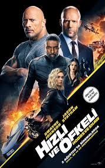
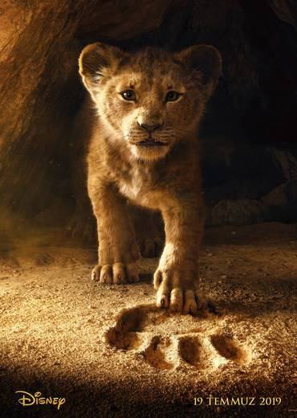
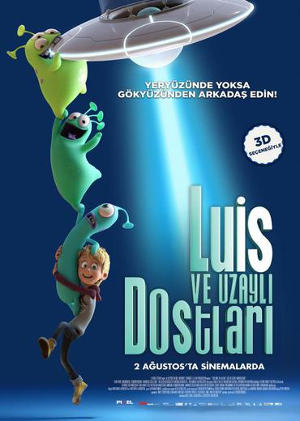

|
Hızlı Ve Öfkeli: Hobbs Ve Shaw  Vizyon Tarihi: 2 Ağustos 2019 Hızlı ve Öfkeli serisinin spin-off filmi olan Hobbs & Shaw, seriden tanıdığımız Luke Hobbs ve Deckard Shaw karakterlerine odaklanıyor. Başrollerini Dwayne Johnson ve Jason Statham’ın üstlendiği filmde “The Crown” dizisinin Prenses Margaret’ı Vanessa Kirby Deckard Shaw’un kız kardeşi olan bir MI-5 ajanına hayat verirken, Altın Küre ödüllü Idris Elba ise kötü adam olarak karşımızı çıkıyor. Yönetmen koltuğuna ise “John Wick”, “Sarışın Bomba” ve “Deadpool 2” filmlerinden tanıdığımız David Leitch'in oturduğu filmin senaryosunu Chris Morgan kaleme alıyor. |
|
Spider-Man:Far From Home Vizyon Tarihi: 5 Ağustos 2019 Örümcek Adam macerasının 2. devam halkası olan filmde Peter Parker’ı bir kez daha milyonlarca hayran kazanan yeni nesil Örümcek Adam Tom Holland canlandırıyor. Genç Peter Parker’ın maceralarının anlatılacağı filmin yönetmenliğini Jon Watts üstleniyor. |
|

Aslan Kral Vizyon Tarihi: 5 Ağustos 2019 Ormanın kralı olan babası Mufasa'ya hayran bir yavru aslan olarak mutlu bir hayat süren Simba, sinsi amcası Scar'ın planlarından habersizdir. Kral olmak için fırsat kollayan Scar, Mufasa'yı öldürdükten sonra Simba için tehlike baş gösterir. Amcasının ihaneti ve babasının kaybı ile yıkılan Simba sürgüne gider. Zamanı geldiğinde hakkı olanı almak için geri dönecek ve amcasına yaptıklarının bedelini ödetecektir... Filmin yönetmen koltuğunda "Orman Çocuğu"na imza atan yönetmen Jon Favreau oturuyor. |
|

Luis ve Uzaylı Dostları Vizyon Tarihi: 5 Ağustos 2019 12 yaşındaki Luis oldukça yalnız bir çocuktur. Birlikte zaman geçireceği hiç arkadaşı yoktur ve UFO bilimcisi babası Arnold Sunday de ona zaman ayırmamaktadır. Arnold, saplantılı bir şekilde uzayda yaşamın olduğunu ispatlamaya çalışmaktadır ve tüm gecelerini teleskopunun başında, tüm günlerini ise uyuyarak geçirmektedir. Okulda da yalnız olan Luis'in durumu okul müdürünün dikkatini çeker. Müdür Luis'in ihmal edildiğinin farkındadır ve onun yatılı okula gönderilmesi gerektiğini düşünür. Fakat bir gün Luis’in hayatı şaşırtıcı bir şekilde değişir. 3 şapşal uzaylı Mag, Nag ve Wabo dünyadaki alışveriş kanalı NubbiDubbi'de satılan masaj matını ararken Luis'in kapısına çakılırlar. Luis, durum karşısında oldukça heyecanlanır ve hemen onlarla arkadaş olur. Fakat bu arkadaşlığı babasından saklar. Çünkü babası uzaylıların tehlikeli olduğunu ve ilk görüşte şokla dondurulması gerektiğini düşünmektedir. Bir süre sonra yatılı okul müdürü Bayan Diekendaker gelir ve Luis'i götürmek ister. Ancak Luis ve uzaylı arkadaşları bu sırada ana gemi ile iletişime geçip uzaylıların kurtarılması için plan yapmaktadır. Gezegeninden ayrılıp uzaylı arkadaşlarıyla galaksiyi keşfetme fikri Luis'i fazlasıyla cezbetmektedir. |